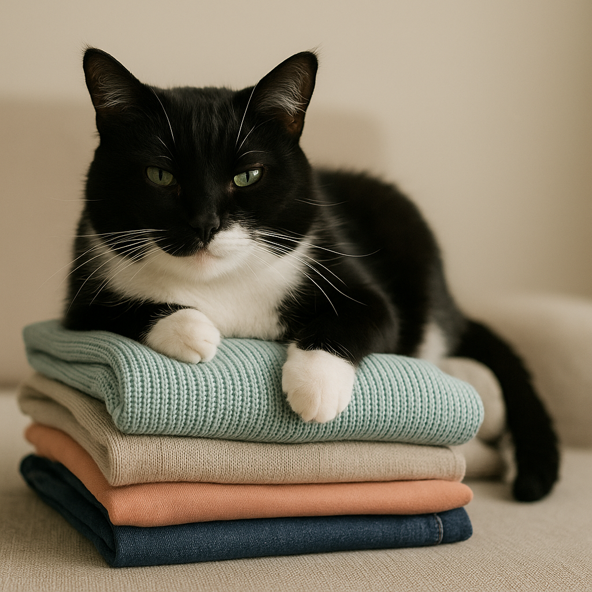

Cada um no seu quadrado (foi o gato quem disse!)

Você dobra a roupa, ajeita a pilha com todo cuidado… e lá vem ele — o verdadeiro dono do armário — se instalando bem em cima, com aquela cara de quem acabou de conquistar um trono. 😼
Mas antes de brigar com o peludo por amassar suas camisetas recém-passadas, vale entender: isso não é teimosia nem sabotagem proposital. É instinto puro, ancestral e profundamente enraizado na biologia felina.
👃 O poder do cheiro familiar: um mapa olfativo de afeto
Mesmo depois de lavadas com sabão em pó, amaciante e aquele cheirinho de lavanda, as roupas ainda guardam traços sutis do seu cheiro. São moléculas imperceptíveis para você, mas perfeitamente detectáveis pelo olfato felino — que é cerca de 14 vezes mais sensível que o nosso e possui aproximadamente 200 milhões de receptores olfativos (nós temos apenas 5 milhões).
Pra ele, aquele monte de roupa dobrada não é apenas tecido: é um mapa olfativo completo. Cheira a você, à sua rotina, aos lugares por onde você passou. É como se cada peça contasse uma história: “essa camisa foi ao supermercado”, “essa calça ficou no sofá à noite”.
Para o gato, esse cheiro significa segurança, vínculo e pertencimento. É como se ele pensasse:
“Aqui tem o cheiro da minha pessoa favorita. Logo, este é o melhor lugar do universo.” 💚
Por isso, deitar nas roupas vai muito além do conforto físico — é um gesto genuíno de afeição, confiança e uma forma de fortalecer o vínculo social. Em colônias felinas, os gatos se esfregam uns nos outros para misturar cheiros e criar um “perfume de grupo”. Com você, eles fazem o mesmo: marcam você, e se marcam com você.
📏 O fascínio pelos espaços delimitados: a psicologia do "quadrado"
Caixas, tapetes, paninhos, cestos de roupa limpa ou até quadrados de fita adesiva no chão… gatos têm uma atração quase magnética por limites visuais bem definidos.
Essa preferência tem raízes evolutivas profundas. Na natureza, felinos selvagens procuram tocas, fendas e espaços protegidos para descansar — lugares onde podem monitorar o ambiente sem serem surpreendidos por predadores ou presas. Bordas visuais criam uma sensação de território definido e controlável, onde o mundo parece menos imprevisível.
Estudos comportamentais mostram que gatos em ambientes estressantes (como abrigos) que recebem caixas para se esconder apresentam níveis significativamente menores de cortisol (o hormônio do estresse) e se adaptam mais rapidamente ao ambiente. Dentro do “quadrado” — seja ele uma caixa de papelão ou uma pilha de roupas perfeitamente retangular — o gato sente que está no controle da situação.
É o mesmo instinto que faz seu felino escolher aquele cantinho específico do sofá, sempre o mesmo, dia após dia. Previsibilidade = segurança.
🌡️ Calor e textura: o combo cientificamente irresistível
Gatos têm uma temperatura corporal naturalmente mais alta que a nossa (entre 38°C e 39°C), e seu metabolismo exige que eles mantenham esse calor com eficiência. Por isso, eles buscam constantemente fontes de calor externo para conservar energia — é mais econômico se aquecer no ambiente do que queimar calorias para manter a temperatura.
Roupas e tecidos acumulam calor corporal residual (especialmente se você acabou de usá-las), têm texturas macias que imitam o pelo de outros gatos e criam superfícies estáveis e acolchoadas. Para um animal que passa de 12 a 16 horas por dia dormindo, a qualidade do “colchão” importa muito.
O resultado? Um local quente, estável, macio e perfumado com o cheiro do tutor: a definição cientificamente perfeita de conforto para qualquer felino.
🎯 O que isso diz sobre seu gato (spoiler: ele te ama!)
Quando seu gato escolhe sua pilha de roupas dobradas em vez da caminha cara que você comprou, não é desprezo pelo presente. É o maior elogio que ele poderia te dar:
“Entre todas as opções do mundo, eu escolho estar onde você esteve, onde seu cheiro está mais forte, onde me sinto mais perto de você.”
É um comportamento que mistura necessidade de conforto físico com apego emocional genuíno. Em outras palavras: ele não está amassando suas camisas — está declarando amor da forma que sabe.
💡 E agora, como lidar com isso?
Opção 1: Aceite que aquelas roupas agora pertencem ao gato (pelo menos temporariamente).
Opção 2: Deixe uma peça de roupa usada — uma camiseta velha, por exemplo — em um cantinho só para ele. Vai ter seu cheiro, será quentinha e delimitada, e talvez (só talvez) ele deixe o resto da pilha em paz.
Opção 3: Feche o armário imediatamente após dobrar. Mas sejamos honestos: você não vai fazer isso. E mesmo que faça, ele vai sentar do lado de fora e julgar você em silêncio. 😼
Porque no fim das contas, quando se tem um gato em casa, você não é mais o único dono das coisas — você é apenas o administrador temporário de um reino felino.
E as roupas dobradas? Bem, elas sempre foram do gato. Você só estava guardando para ele. 🐱👑
← Voltar para o blog